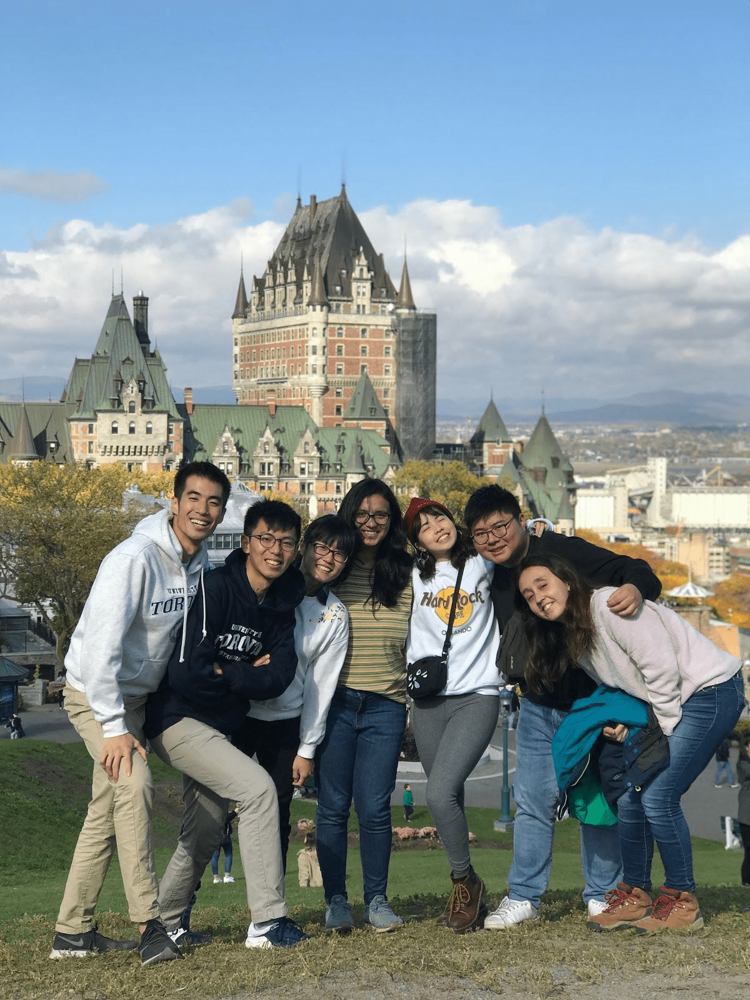
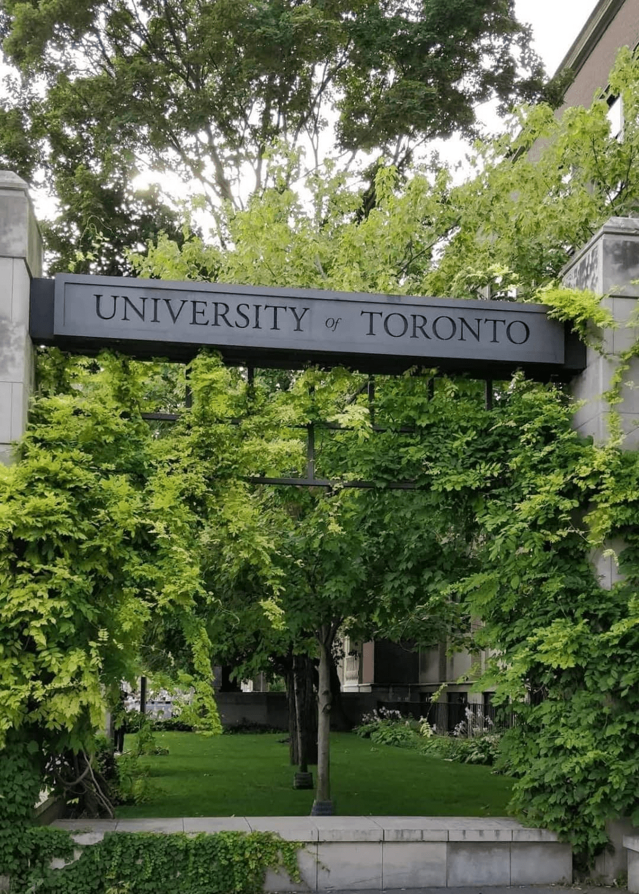

"It was a glorious 4-month long vacation!", I answered, every time a curious eye looked at me expectantly on my homecoming. I could never be more thankful to the fact that the possibility of an exchange powered its way through the sea of opportunities offered at the Institute. The whole idea of traveling abroad without any leash weighing you down was very overwhelming and being a Dual degree student, I couldn't let this opportunity go. The fascinating exchange stories by a few seniors fuelled me further as I happily set out to prepare for the application procedure.

Belonging to the Electrical Engineering department, my course mapping was extremely easy as I had a lot of options in nearly every university. Having been to Europe before, I wanted to try some of the top Canadian universities. I had always wanted to see a part of North America which was not the USA(at least that's what the people without a USA visa say :P). The application procedure was super smooth but the biggest obstacle that I faced was when my Student-Visa got rejected a month before my flight. All my dreams came crashing down when I looked at the rejection mail by the Immigration office of Canada on my phone. I took a chance to reapply and with a lot of support from a few friends and family, I luckily got through - just in the nick of the time.
Regardless of all the last-minute fiasco, the semester at Toronto started with a blast. The Inbound Exchange Office at the University of Toronto was extremely welcoming and made all the students feel at-home with a series of interactive orientations, dodgeball games, free skating nights, pub-gatherings and what not. Although the University caters to students of all fields(not only Engineering), it had an enigmatic way to tie together a jaw droppingly huge number of students touching almost 1 lakh. The academic workload was definitely easier and the curriculum was more fun than the one followed here. Since I had a lot of time in between my classes, I explored most parts of the University and Toronto during the week. I tried to be as Canadian as I could be, by signing up for Ice-skating classes. It was one of the best decisions as I met some of the sweetest people on earth in the class, which grew into a tightly-knit group of friends. Weekends greeted us with exciting travel-plans and a lot of exhilarating experiences and memories. Owing to the fact that UofT doesn't have any dormitory system, we were blessed with a lot of house-parties, nostalgic potlucks and merry-making during Candian festivals.

Canada has been such a heart-warming country, that I couldn't help but embrace it with unblemished adoration and affection. The charm of the country lies in the simplicity and the flawless temperament of the people. It's hard to live in Canada and not appreciate the subtlety of life. The intangibile highlight of any exchange lies in the easiness that it brings in you - discovering your own thoughts, engaging in uncomfortable-at-first conversations, saying yes more often than no to opportunities, encouraging self-care, unboxing confidence, tossing away the unspoken flaws and stepping up as a more wholesome you.